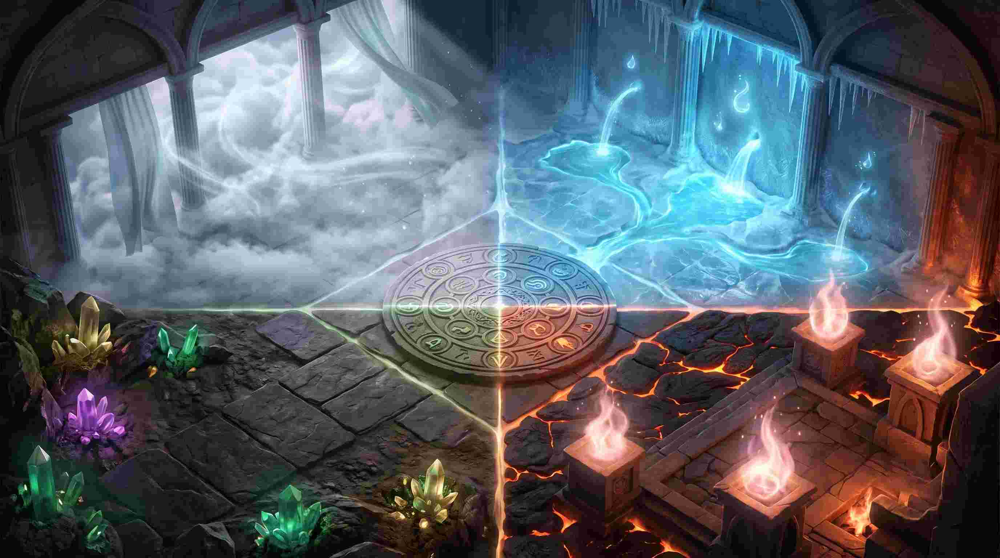
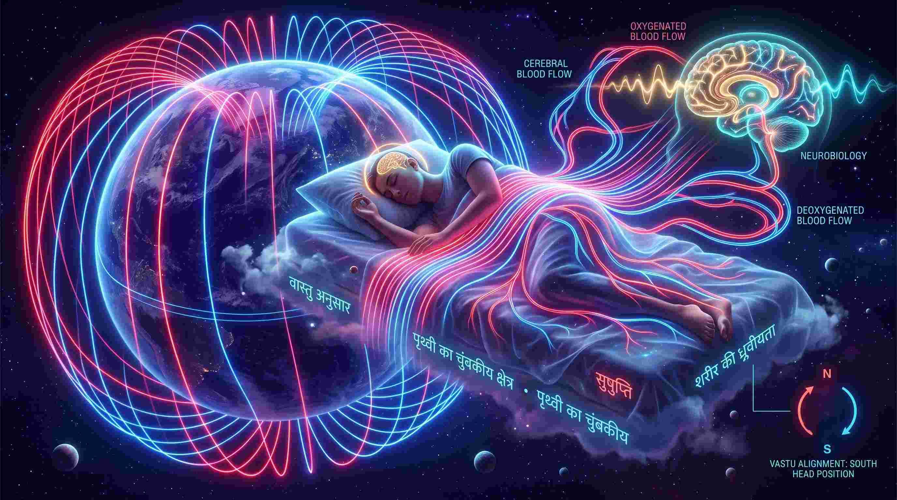
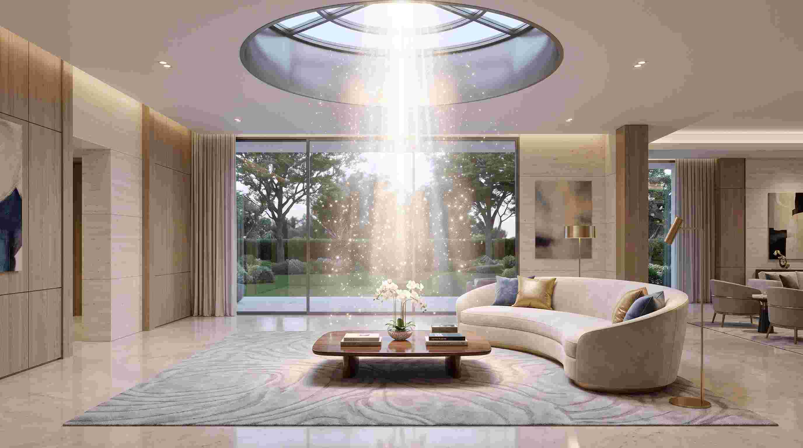

क्या आपने कभी गौर किया है कि किसी विशेष घर या कमरे में प्रवेश करते ही आपको अचानक भारीपन, थकान या घबराहट महसूस होने लगती है? इसके विपरीत, कुछ जगहों पर जाते ही आपका मन अकारण ही शांत और प्रफुल्लित हो जाता है। क्या यह सिर्फ एक मनोवैज्ञानिक (Psychological) भ्रम है? मेडिकल साइंस और क्वांटम फिजिक्स कहता है— बिल्कुल नहीं!
एक मेडिकल छात्र और वैदिक ज्योतिषी होने के नाते, मैं वास्तु शास्त्र (Vastu Shastra) को किसी अंधविश्वास या सिर्फ फर्नीचर खिसकाने की कला के रूप में नहीं देखता। वास्तु असल में पृथ्वी के इलेक्ट्रोमैग्नेटिक फील्ड (Electromagnetic Field), कॉस्मिक ऊर्जा (Cosmic Energy) और मानव शरीर की न्यूरोबायोलॉजी (Neurobiology) के बीच का गहरा तालमेल है। आज हम वास्तु के उन रहस्यों को खोलेंगे जिन्हें 99% लोग नहीं जानते।
"वास्तु शास्त्र का मूल सिद्धांत है: जैसा ब्रह्मांड में है (Macrocosm), वैसा ही मानव शरीर में है (Microcosm), और वैसा ही उस घर में होना चाहिए जहां वह शरीर रहता है।"
1. वास्तु पुरुष मंडल (Vastu Purusha Mandala): घर की एनाटॉमी (Anatomy)
प्राचीन ऋषियों ने घर के नक्शे को एक जीवित प्राणी माना है, जिसे 'वास्तु पुरुष' कहते हैं। मेडिकल भाषा में, जैसे मानव शरीर में विभिन्न अंग (हृदय, मस्तिष्क, फेफड़े) होते हैं, वैसे ही घर के विभिन्न कोनों को ऊर्जा के विशिष्ट अंगों के रूप में विभाजित किया गया है।

चार मुख्य दिशाएं और शरीर के अंग:
- ईशान कोण (North-East / Water Element): यह घर का 'मस्तिष्क' (Brain) और पीनियल ग्लैंड (Pineal Gland) है। यह दिशा जल तत्व को दर्शाती है। यदि इस दिशा में भारी निर्माण, कूड़ा या शौचालय (Toilet) है, तो उस घर के सदस्यों को माइग्रेन, न्यूरोलॉजिकल समस्याएं और निर्णय लेने में भारी कन्फ्यूजन (Brain Fog) का सामना करना पड़ता है।
- आग्नेय कोण (South-East / Fire Element): यह घर का 'पाचन तंत्र' (Digestive System) और 'मेटाबॉलिज्म' है। यह दिशा अग्नि तत्व की है। यदि यहाँ पानी का टैंक बना दिया जाए, तो घर का 'कैश फ्लो' (Cash Flow) और स्त्रियों का स्वास्थ्य (Gynecological issues) पूरी तरह से जलकर खाक हो जाता है।
- नैऋत्य कोण (South-West / Earth Element): यह घर का 'कंकाल तंत्र' (Skeletal System) है। यह स्थिरता (Stability) देता है। घर के मुखिया (Head of the family) का कमरा यहीं होना चाहिए। यदि यह दिशा कमजोर या कटी हुई है, तो हड्डियां कमजोर होती हैं और जीवन में स्थायित्व कभी नहीं आता।
- वायव्य कोण (North-West / Air Element): यह घर का 'श्वसन तंत्र' (Respiratory System) है। यह गति (Movement) और नेटवर्किंग का कारक है। यदि यहाँ कोई वास्तु दोष है, तो कोर्ट-कचहरी के मामले और डिप्रेशन (Depression) जैसी समस्याएं जन्म लेती हैं।
2. उत्तर दिशा में सिर रखकर सोना क्यों मना है? (The Medical Science)
भारत में हर बच्चा अपनी दादी-नानी से सुनता है कि "उत्तर (North) की ओर सिर करके मत सोओ।" लेकिन इसके पीछे का विज्ञान क्या है?

पृथ्वी का अपना एक विशाल इलेक्ट्रोमैग्नेटिक फील्ड है, जिसका उत्तरी ध्रुव (North Pole) पॉजिटिव (+) और दक्षिणी ध्रुव (South Pole) नेगेटिव (-) चार्ज होता है। इसी प्रकार, मानव शरीर का भी अपना एक मैग्नेटिक फील्ड है—जहाँ हमारा सिर पॉजिटिव (+) और पैर नेगेटिव (-) होते हैं।
हमारे रक्त (Blood) में हीमोग्लोबिन होता है, जिसका मुख्य तत्व आयरन (Iron) है। जब आप उत्तर दिशा में सिर करके सोते हैं, तो पृथ्वी का उत्तरी ध्रुव और आपके सिर का उत्तरी ध्रुव आपस में टकराते हैं (Like poles repel)। इस भारी चुंबकीय प्रतिकर्षण (Magnetic Repulsion) के कारण आपके मस्तिष्क में रक्त का प्रवाह अनियंत्रित रूप से बढ़ जाता है। इसके परिणामस्वरूप आपको बुरे सपने (Nightmares), स्लीप एप्निया (Sleep Apnea), सुबह उठकर भारी थकान और लंबे समय में ब्रेन स्ट्रोक (Brain Stroke) या उच्च रक्तचाप (Hypertension) का खतरा कई गुना बढ़ जाता है। यही कारण है कि दक्षिण (South) या पूर्व (East) की ओर सिर रखकर सोना सबसे स्वास्थ्यवर्धक माना गया है।
3. ब्रह्मस्थान (Brahmasthan): घर का धड़कता हुआ हृदय
ब्रह्मस्थान घर का बिल्कुल मध्य भाग (Center) होता है। जिस प्रकार मानव शरीर में नाभि (Navel) या हृदय सबसे महत्वपूर्ण होता है, वैसे ही घर का पूरा ऊर्जा संचार ब्रह्मस्थान से ही होता है।

प्राचीन काल के आंगनों (Courtyards) वाले घरों में यह स्थान हमेशा खुला रखा जाता था ताकि कॉस्मिक एनर्जी (Cosmic Energy) सीधे घर में आ सके। आज के आधुनिक फ्लैट्स (Apartments) में, यदि आपने घर के बिल्कुल बीचों-बीच भारी डाइनिंग टेबल, कोई पिलर (Pillar), या सबसे खराब—शौचालय (Toilet) बना रखा है, तो उस घर में कभी शांति नहीं आ सकती। घर के केंद्र में भारी अवरोध होने से परिवार के सदस्यों को पेट की गंभीर बीमारियां (Gastrointestinal diseases) और अकारण आर्थिक नुकसान झेलना पड़ता है। ब्रह्मस्थान को हमेशा खाली, साफ और हल्का (Clutter-free) रखें।
4. आधुनिक फ्लैट्स में वास्तु दोष: बिना तोड़-फोड़ के वैज्ञानिक उपाय (Remedies)
कई लोग वास्तु दोष सुनकर डर जाते हैं कि अब पूरा घर तोड़ना पड़ेगा। लेकिन 'एनर्जी अलाइनमेंट' (Energy Alignment) के लिए घर तोड़ने की जरूरत नहीं होती। आप रंगों (Colors), धातुओं (Metals) और प्राकृतिक तत्वों से ऊर्जा को बैलेंस कर सकते हैं:
- रंग चिकित्सा (Color Therapy): हर दिशा का अपना एक रंग होता है। उत्तर-पूर्व (NE) में हल्के नीले (Light Blue) या क्रीम रंग का प्रयोग करें। दक्षिण-पूर्व (SE) किचन में हल्का लाल या पीच रंग सकारात्मक अग्नि पैदा करता है। गलत दिशा में गलत रंग (जैसे उत्तर में लाल रंग) वास्तु दोष पैदा करता है।
- समुद्री नमक (Sea Salt) का चमत्कार: यदि घर में बहुत ज्यादा नकारात्मक ऊर्जा या झगड़े रहते हैं, तो पोंछा लगाते समय पानी में थोड़ा सा खड़ा समुद्री नमक मिला लें। नमक एक क्रिस्टल (Crystal) है जो नेगेटिव आयन्स (Negative Ions) को सोखने की अद्भुत वैज्ञानिक क्षमता रखता है।
- पौधों का प्रयोग (Botanical Vastu): तुलसी, स्नेक प्लांट (Spider Plant), और मनी प्लांट हवा को तो साफ करते ही हैं, साथ ही ये घर की 'प्राण ऊर्जा' (Prana) को भी बढ़ाते हैं। लेकिन ध्यान रहे, कैक्टस या दूध निकलने वाले कंटीले पौधे घर के अंदर (विशेषकर बेडरूम में) कभी नहीं रखने चाहिए।
- आईने का नियम (Mirrors): आईना ऊर्जा को रिफ्लेक्ट (Reflect) करता है। यदि आपके बेडरूम में आईना इस तरह रखा है कि सोते समय उसमें आपका शरीर दिखता है, तो यह आपकी ऊर्जा को पूरी रात ड्रेन (Drain) करता रहेगा, जिससे आप सुबह थका हुआ महसूस करेंगे। आईने को हमेशा उत्तर या पूर्व की दीवार पर लगाना चाहिए।
निष्कर्ष: आपका घर आपका मंदिर है
वास्तु शास्त्र कोई जादू-टोना नहीं है। यह पर्यावरण (Environment) और मानव मनोविज्ञान (Human Psychology) के बीच सामंजस्य बिठाने का सबसे पुराना और सटीक विज्ञान है। यदि आप लगातार बीमार पड़ रहे हैं, करियर में रुकावट आ रही है, या घर में बिना बात के कलेश हो रहा है, तो एक बार अपनी जन्म कुंडली (Kundali) और अपने घर के वास्तु (Vastu) दोनों का गहराई से विश्लेषण करवाएं।
याद रखें, एक बीमार शरीर कभी बड़े लक्ष्य हासिल नहीं कर सकता, और एक बीमार घर (वास्तु दोष वाला घर) कभी एक स्वस्थ और समृद्ध परिवार को नहीं पाल सकता। अपने घर की ऊर्जा को संतुलित करें, ब्रह्मांड आपकी ऊर्जा को अपने आप संतुलित कर देगा!